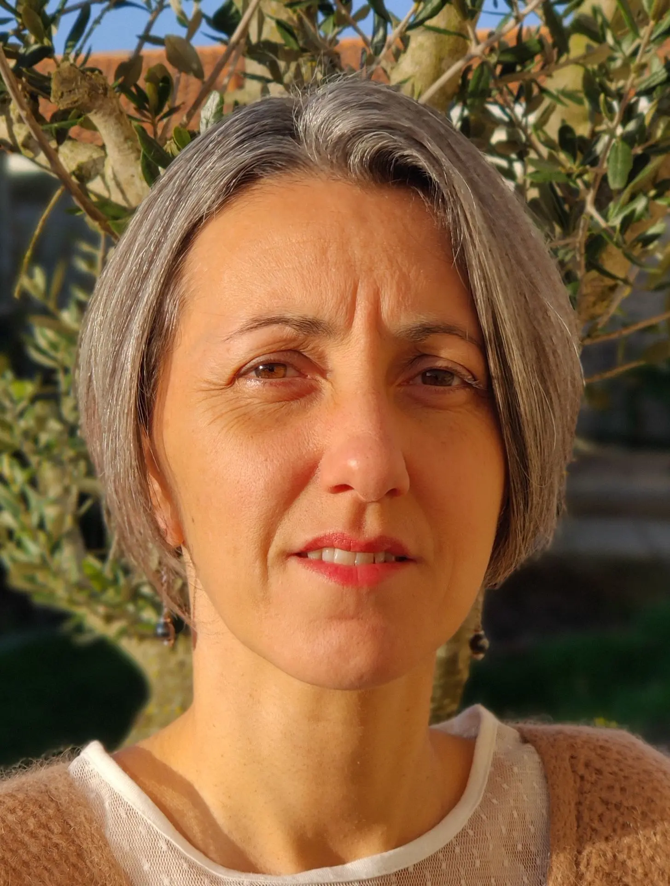

Stéphanie Chauvin est réflexologue plantaire ayurvédique certifiée, passionnée par l'approche holistique de la santé inspirée de la médecine traditionnelle indienne. La réflexologie plantaire ayurvédique agit sur les zones réflexes des pieds pour rééquilibrer les énergies du corps et favoriser un retour à l'harmonie.
Forte de sa formation en nutrition sportive, Stéphanie accompagne également les sportifs et les personnes souhaitant optimiser leur alimentation pour améliorer leurs performances ou simplement retrouver vitalité et équilibre.
Elle reçoit en présentiel à Cholet (cabinet Terre'Happy) et au Longeron, ainsi qu'en consultation à distance par visio, pour une accessibilité maximale.